|
Physics Laboratory |

|
Excel Tutorial #4 |
|
3. Basic Actions E |
Algebra |
5. Displaying Symbols F |
Excel is very useful when solving algebraic equations. The program, however, will not actually perform any algebraic operations; you must supply the proper formula.
For instance, we can use Excel to determine the thickness of one
sheet of paper. Say we know that a ream of paper contains 500 sheets and is
4.895 cm thick. The thickness of a single sheet can be determined
by dividing the total thickness by the total number of sheets in the ream.
Let's utilize the spread sheet program by first
recording our known values, i.e., the total number of sheets and the
total thickness. These are entered into columns A and B, respectively,
in the example below.
The formula (=B2/A2) can then be entered in cell C2.
The worksheet example is shown below.
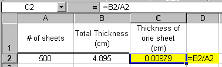
Note that the cell containing the formula is highlighted and the equation is also printed and highlighted. With any worksheet that you turn in to be graded, it is important that you highlight and print your formulas so your TA can follow your steps and correct your mistakes. Also be sure to print the gridlines and the Row and Column headings. For information about these and other basic actions, see the previous tutorial.
Here is another slightly more complicated example where
Excel can be a help to us. Let's say that
we wish to know the distance traveled if you run around a football
field six times. It is given that the length of the field is
109.80 meters and its width is 48.80 meters. The distance traveled
is simply
the field's perimeter multiplied by the number of laps. The perimeter,
of course, is the sum of the distances of each side of the field, or
Perimeter = (2 x Length) + (2 x Width). Therefore your worksheet
may look like the following:
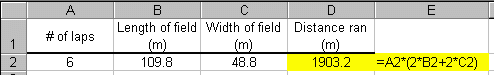
We can use the work in the above example to determine the number of miles which was run. The conversion factor between meters and miles is 1 mile = 1609.3 meters. Therefore using this conversion and the result from cell D2 in the above example, we can find the distance traveled in miles. The screen shot below shows the formula used:
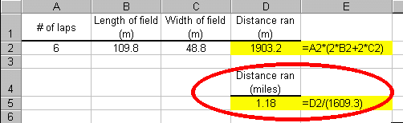
To determine the distance traveled if you ran, say, 12.5 laps, all you need to do is change the contents of cell A2 from 6 to 12.5 and the distance is automatically recalculated for you! There is no need to alter any of your formulas!
Here is another example. The general quadratic equation is given by
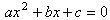
. Its solution is, of course, the quadratic formula, or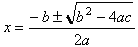
Say we are given the quadratic equation,
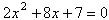
, and we wish to find both of its solutions. We can use Excel to help us do this and the screen shot below shows how that is done. (The spaces within the formula were added to make the formula easier to read.)
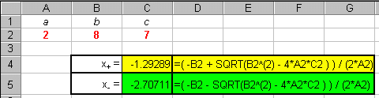
Of course, to solve another quadratic equation, all one needs to do is change the values of the constants a, b and c in cells A1, B1 and C1. There is no need to alter the formula and the new result is given immediately after the new values are entered!
Are you beginning to see how Excel can make your physics laboratory experience a more enjoyable one? If not, please tell me ()why.
We will close this tutorial with one last example with which all
should be familiar. You should know that the volume
of a sphere is given by the
formula
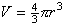
, where r is the sphere's radius and p = 3.14159. In this example, we are told that the volume of a basketball is 7200 cm3. Use Excel to determine the radius of the ball. First, the equation must be rewritten as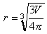
. The screen shot below shows one way to use Excel to solve for the radius: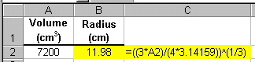
In the above example, we used the number 3.14159 to represent the constant p. Excel has a built-in constant, PI( ), which returns the value for p when used in an Excel formula. Therefore, the equation for the radius in the above example can be rewritten as shown below:
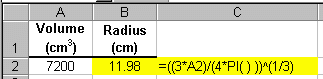
Either method is fine to use. Some prefer to use the numerical value and some prefer to use the built-in constant. The choice is yours.
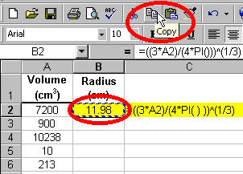
Finally, let's say, that we know the volumes of four other spheres and we would like to determine the radii of these spheres. We could simply change the value of cell A2 in the above examples and determine the radius of each sphere one at a time. Or we could type new formulas for each sphere. However the best (and fastest) way to determine the radii of the remaining spheres is to use the copy and paste functions that we learned of in the previous tutorial.
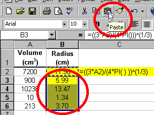
See the complete list of Excel's
built-in mathematical and
trigonometric functions and their descriptions.
If you have a question or comment, send an e-mail to
.
|
3. Basic Actions E |

|
5. Displaying Symbols F |
Copyright © 2000, Clemson University. All Rights Reserved.
This page was created by
.